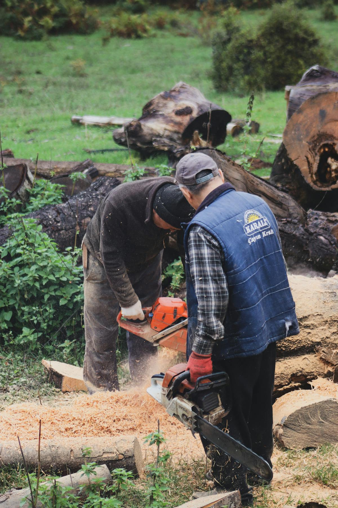

油锯安全操作与维护手册

安全警告：油锯是高危电动工具，操作前务必阅读并理解本手册全部内容。不当操作可能导致严重人身伤害甚至死亡。务必佩戴全套安全防护装备。
一、安全防护装备（PPE）
操作油锯前，每次必须穿戴以下个人防护装备：
| 装备名称 | 标准要求 | 说明 |
|---|---|---|
| 安全头盔 | EN 397 / ANSI Z89.1 | 带面罩和耳罩一体式头盔最佳 |
| 防护面罩 | EN 1731 | 防止木屑飞溅伤眼 |
| 听力保护 | SNR ≥ 25dB | 油锯噪音通常100-110dB，必须佩戴 |
| 防割背带裤 | EN 381-5 Class 1 | 覆盖前腿至脚踝，填充防割纤维 |
| 防割手套 | EN 381-7 | 左手（前手）防护等级应更高 |
| 钢头安全鞋 | EN 345 / ANSI Z41 | 防砸、防滑、防割 |
二、操作前安全检查
- 检查链条张力：提起链条中部，应能拉离导板3-4mm，松开后应弹回贴合导板。过松易脱链，过紧加速磨损。
- 检查链条锋利度：钝刀会增加操作时间和反冲风险。标准是切出的木屑应为大块薄片，而非粉末。
- 检查刹车功能：惯性刹车（前手护罩前推）和手动刹车均应正常工作。启动前务必测试。
- 检查燃油和机油：使用50:1或40:1（依机型）的汽油/2T机油混合油。链条润滑油箱应加满。
- 检查各紧固件：导板螺母、气缸螺丝、启动器螺丝——全部确认拧紧。
三、正确操作姿势与技巧
3.1 基本站姿
- 双脚分开与肩同宽，身体重心稳定。
- 左手握前把手，右手握后把手（油门手柄），双手紧握。
- 切割时油锯靠近身体，不要过度伸展手臂。
- 始终站在油锯的侧面，不站在切割线正后方（防反冲）。
3.2 反冲（Kickback）预防
反冲是油锯事故的首要原因。当导板前端上1/4区域（反冲危险区）接触物体时，油锯会以极快速度向上后方反弹。预防措施：
- 绝不使用导板前端切割。
- 始终以全速油门切入木材。
- 保持链条锋利——钝刀会增大反冲概率。
- 使用低反冲链条和导板组合（华悦所有油锯默认配备）。
3.3 基本切割技术
- 由上往下切：用导板底部（靠近机身侧）切入，链条运动方向为拉向操作者。
- 由下往上切：用导板顶部（远离机身侧）切入，链条运动方向为推离操作者。注意此方向更易反冲。
- 伐木切割：先开水平方向缺口（深约树干直径1/4），再在对面略高位置进行伐木切。
四、日常维护保养周期
| 保养项目 | 每次使用前 | 每10小时 | 每50小时 | 每100小时 |
|---|---|---|---|---|
| 检查链条张力 | ✓ | |||
| 清洁/更换空滤 | 检查 | 清洁 | 更换 | |
| 清洁导板槽 | ✓ | |||
| 磨锐链条 | 检查 | 磨锐 | ||
| 清洗/更换火花塞 | 清洗 | 更换 | ||
| 检查燃油滤清器 | ✓ | 更换 | ||
| 清理消音器积碳 | ✓ | |||
| 更换链条润滑油 | 检查 | 排空清洗 |
五、常见故障排查
| 故障现象 | 可能原因 | 解决方法 |
|---|---|---|
| 启动困难或不启动 | 燃油变质、火花塞积碳、空滤堵塞 | 更换新混合油、清洗/更换火花塞、清洁空滤 |
| 怠速不稳或熄火 | 化油器怠速螺丝松动、空滤脏污 | 调整怠速螺丝至平稳运转、清洁空滤 |
| 加速无力 | 化油器H针过稀、燃油滤堵塞、排气口积碳 | 调整高速油针、更换燃油滤、清理消音器 |
| 链条不转动 | 离合器磨损、链条过紧、链轮损坏 | 更换离合器片、调整链条张力、更换链轮 |
| 链条冒烟 | 链条润滑油不足、导板槽堵塞 | 加满链条油、清洁导板槽和油孔 |
| 切割偏斜 | 链条单侧磨钝、导板磨损不均 | 均匀磨锐所有刀齿、打磨或更换导板 |
六、存放规范
- 长期存放（30天以上）前，排空燃油箱，启动发动机耗尽化油器内残余燃油。
- 拆下火花塞，滴入2-3滴2T机油，轻拉启动绳2-3次使机油分布均匀，装回火花塞。
- 清洁整机，导板涂抹防锈油，链条单独浸泡机油后包裹存放。
- 存放在干燥、通风、远离火源和儿童可及之处。
维护提示：建议经销商为客户提供首保免费服务（使用10小时后），包括链条磨锐、空滤清洁和全面安全检查。这能显著提升客户满意度和复购率。